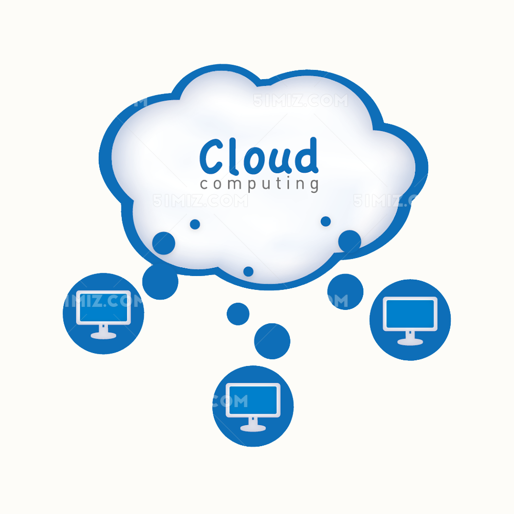

云计算(cloud computing）
云计算（科学术语）词条解释
云计算（cloud computing）是分布式计算的一种，指的是通过网络“云”将巨大的数据计算处理程序分解成无数个小程序，然后，通过多部服务器组成的系统进行处理和分析这些小程序得到结果并返回给用户。云计算早期，简单地说，就是简单的分布式计算，解决任务分发，并进行计算结果的合并。因而，云计算又称为网格计算。通过这项技术，可以在很短的时间内（几秒钟）完成对数以万计的数据的处理，从而达到强大的网络服务。
现阶段所说的云服务已经不单单是一种分布式计算，而是分布式计算、效用计算、负载均衡、并行计算、网络存储、热备份冗杂和虚拟化等计算机技术混合演进并跃升的结果。
一、概述

“云”实质上就是一个网络，狭义上讲，云计算就是一种提供资源的网络，使用者可以随时获取“云”上的资源，按需求量使用，并且可以看成是无限扩展的，只要按使用量付费就可以，“云”就像自来水厂一样，我们可以随时接水，并且不限量，按照自己家的用水量，付费给自来水厂就可以。
云计算不是一种全新的网络技术，而是一种全新的网络应用概念，云计算的核心概念就是以互联网为中心，在网站上提供快速且安全的云计算服务与数据存储，让每一个使用互联网的人都可以使用网络上的庞大计算资源与数据中心。
云计算是继互联网、计算机后在信息时代又一种新的革新，云计算是信息时代的一个大飞跃，未来的时代可能是云计算的时代，虽然目前有关云计算的定义有很多，但总体上来说，云计算虽然有许多得含义，但概括来说，云计算的基本含义是一致的，即云计算具有很强的扩展性和需要性，可以为用户提供一种全新的体验，云计算的核心是可以将很多的计算机资源协调在一起，因此，使用户通过网络就可以获取到无限的资源，同时获取的资源不受时间和空间的限制。
二、特点

1、虚拟化技术
必须强调的是，虚拟化突破了时间、空间的界限，是云计算最为显著的特点，虚拟化技术包括应用虚拟和资源虚拟两种。众所周知，物理平台与应用部署的环境在空间上是没有任何联系的，正是通过虚拟平台对相应终端操作完成数据备份、迁移和扩展等。
2、动态可扩展
云计算具有高效的运算能力，在原有服务器基础上增加云计算功能能够使计算速度迅速提高，最终实现动态扩展虚拟化的层次达到对应用进行扩展的目的。
3、按需部署
计算机包含了许多应用、程序软件等，不同的应用对应的数据资源库不同，所以用户运行不同的应用需要较强的计算能力对资源进行部署，而云计算平台能够根据用户的需求快速配备计算能力及资源。
4、灵活性高
目前市场上大多数IT资源、软、硬件都支持虚拟化，比如存储网络、操作系统和开发软、硬件等。虚拟化要素统一放在云系统资源虚拟池当中进行管理，可见云计算的兼容性非常强，不仅可以兼容低配置机器、不同厂商的硬件产品，还能够外设获得更高性能计算。
5、可靠性高
倘若服务器故障也不影响计算与应用的正常运行。因为单点服务器出现故障可以通过虚拟化技术将分布在不同物理服务器上面的应用进行恢复或利用动态扩展功能部署新的服务器进行计算。
6、性价比高
将资源放在虚拟资源池中统一管理在一定程度上优化了物理资源，用户不再需要昂贵、存储空间大的主机，可以选择相对廉价的PC组成云，一方面减少费用，另一方面计算性能不逊于大型主机。
7、可扩展性
用户可以利用应用软件的快速部署条件来更为简单快捷的将自身所需的已有业务以及新业务进行扩展。如，计算机云计算系统中出现设备的故障，对于用户来说，无论是在计算机层面上，亦或是在具体运用上均不会受到阻碍，可以利用计算机云计算具有的动态扩展功能来对其他服务器开展有效扩展。这样一来就能够确保任务得以有序完成。在对虚拟化资源进行动态扩展的情况下，同时能够有效扩展应用，提高计算机云计算的操作水平。
三、服务类型
1、基础设施即服务（IaaS)
基础设施即服务是主要的服务类别之一，它向云计算提供商的个人或组织提供虚拟化计算资源，如虚拟机、存储、网络和操作系统。
2、平台即服务(PaaS)
平台即服务是一种服务类别，为开发人员提供通过全球互联网构建应用程序和服务的平台。Paas为开发、测试和管理软件应用程序提供按需开发环境。
3、软件即服务(SaaS)
软件即服务也是其服务的一类，通过互联网提供按需软件付费应用程序，云计算提供商托管和管理软件应用程序，并允许其用户连接到应用程序并通过全球互联网访问应用程序。
四、安全威胁
1、云计算安全中隐私被窃取
现今，随着时代的发展，人们运用网络进行交易或购物，网上交易在云计算的虚拟环境下进行，交易双方会在网络平台上进行信息之间的沟通与交流。而网络交易存在着很大的安全隐患，不法分子可以通过云计算对网络用户的信息进行窃取，同时还可以在用户与商家进行网络交易时，来窃取用户和商家的信息，当有企图的分子在云计算的平台中窃取信息后，就会采用一些技术手段对信息进行破解，同时对信息进行分析，以此发现用户更多的隐私信息，甚至有企图的不法分子还会通过云计算来盗取用户和商家的信息。
2、云计算中资源被冒用
云计算的环境有着虚拟的特性，而用户通过云计算在网络交易时，需要在保障双方网络信息都安全时才会进行网络的操作，但是云计算中储存的信息很多，同时在云计算中的环境也比较的复杂，云计算中的数据会出现滥用的现象，这样会影响用户的信息安全，同时造成一些不法分子利用被盗用的信息进行欺骗用户亲人的行为，同时还会有一些不法分子会利用这些在云计算中盗用的信息进行违法的交易，以此造成云计算中用户的经济遭到损失，这些都是云计算信息被冒用引起的，同时这些都严重威胁了云计算的安全。
3、云计算中容易出现黑客的攻击
黑客攻击指的是利用一些非法的手段进入云计算的安全系统，给云计算的安全网络带来一定的破坏的行为，黑客入侵到云计算后，使云计算的操作带来未知性，同时造成的损失也很大，且造成的损失无法预测，所以黑客入侵给云计算带来的危害大于病毒给云计算带来的危害。此外，黑客入侵的速度远大于安全评估和安全系统的更新速度，使得当今黑客入侵到电脑后，给云计算带来巨大的损失，同时技术也无法对黑客攻击进行预防，这也是造成当今云计算不安全的问题之一。
4、云计算中容易出现病毒
在云计算，大量的用户通过云计算将数据存储到其中，这时大量当云计算出现异常时，就会出现一些病毒，这些病毒的出现会导致以云计算为载体的计算机无法正常工作的现象，同时这些病毒还能进行复制，并通过一些途径进行传播，这样就会导致为云计算为载体的计算机出现死机的现象，同时，因为互联网的传播速度很快，导致云计算或计算机一旦出现病毒，就会很快地进行传播，这样会产生很大的攻击力。
五、应用
较为简单的云计算技术已经普遍服务于现如今的互联网服务中，最为常见的就是网络搜索引擎和网络邮箱。搜索引擎大家最为熟悉的莫过于谷歌和百度了，在任何时刻，只要用过移动终端就可以在搜索引擎上搜索任何自己想要的资源，通过云端共享了数据资源。而网络邮箱也是如此，在过去，寄写一封邮件是一件比较麻烦的事情，同时也是很慢的过程，而在云计算技术和网络技术的推动下，电子邮箱成为了社会生活中的一部分，只要在网络环境下，就可以实现实时的邮件的寄发。其实，云计算技术已经融入现今的社会生活。
1、存储云
存储云，又称云存储，是在云计算技术上发展起来的一个新的存储技术。云存储是一个以数据存储和管理为核心的云计算系统。用户可以将本地的资源上传至云端上，可以在任何地方连入互联网来获取云上的资源。大家所熟知的谷歌、微软等大型网络公司均有云存储的服务，在国内，百度云和微云则是市场占有量最大的存储云。存储云向用户提供了存储容器服务、备份服务、归档服务和记录管理服务等等，大大方便了使用者对资源的管理。
2、医疗云
医疗云，是指在云计算、移动技术、多媒体、4G通信、大数据、以及物联网等新技术基础上，结合医疗技术，使用“云计算”来创建医疗健康服务云平台，实现了医疗资源的共享和医疗范围的扩大。因为云计算技术的运用于结合，医疗云提高医疗机构的效率，方便居民就医。像现在医院的预约挂号、电子病历、医保等等都是云计算与医疗领域结合的产物，医疗云还具有数据安全、信息共享、动态扩展、布局全国的优势。
3、金融云
金融云，是指利用云计算的模型，将信息、金融和服务等功能分散到庞大分支机构构成的互联网“云”中，旨在为银行、保险和基金等金融机构提供互联网处理和运行服务，同时共享互联网资源，从而解决现有问题并且达到高效、低成本的目标。在2013年11月27日，阿里云整合阿里巴巴旗下资源并推出来阿里金融云服务。其实，这就是现在基本普及了的快捷支付，因为金融与云计算的结合，现在只需要在手机上简单操作，就可以完成银行存款、购买保险和基金买卖。现在，不仅仅阿里巴巴推出了金融云服务，像苏宁金融、腾讯等等企业均推出了自己的金融云服务。
4、教育云
教育云，实质上是指教育信息化的一中发展。具体的，教育云可以将所需要的任何教育硬件资源虚拟化，然后将其传入互联网中，以向教育机构和学生老师提供一个方便快捷的平台。现在流行的慕课就是教育云的一种应用。慕课MOOC，指的是大规模开放的在线课程。现阶段慕课的三大优秀平台为Coursera、edX以及Udacity，在国内，中国大学MOOC也是非常好的平台。在2013年10月10日，清华大学推出来MOOC平台——学堂在线，许多大学现已使用学堂在线开设了一些课程的MOOC。